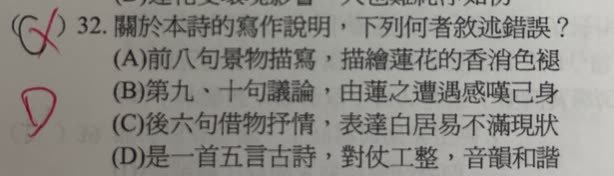
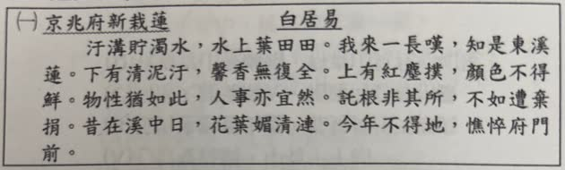

分享原卷｜第32題
完整原題
作答所需文章／材料
白居易〈京兆府新栽蓮〉 汙溝貯濁水，水上葉田田。我來一長嘆，知是東溪蓮。 下有清泥汙，馨香無復全。上有紅塵撲，顏色不得鮮。 物性猶如此，人事亦宜然。託根非其所，不如遭棄捐。 昔在溪中日，花葉媚清漣。今年不得地，憔悴府門前。關於本詩的寫作說明，下列何者敘述錯誤？
(A) 前八句景物描寫，描繪蓮花的香消色褪
(B) 第九、十句議論，由蓮之遭遇感嘆己身
(C) 後六句借物抒情，表達白居易不滿現狀
(D) 是一首五言古詩，對仗工整，音韻和諧
先想一想，再查看答案、解說與原圖
原卷作答：C（原卷紅筆改D）
原卷預期：(D)；古詩不強制對仗，不代表不能對仗，原選項措辭需釐清。
逐項解析
| 選項與原句 | 判讀 | 句意與判斷理由 |
|---|---|---|
| (A) 前八句景物描寫，描繪蓮花的香消色褪 | 不選 | 前八句有泥汙、紅塵、香氣失去及顏色不鮮的描寫。 |
| (B) 第九、十句議論，由蓮之遭遇感嘆己身 | 不選 | 第九、十句把花的遭遇類推到人事，是議論轉折。 |
| (C) 後六句借物抒情，表達白居易不滿現狀 | 不選 | 末六句寫生長位置不當及今昔對比，寄寓自身感慨。 |
| (D) 是一首五言古詩，對仗工整，音韻和諧 | 原卷預期；措辭疑義 | 原卷預期應選D；五言古詩判定正確，惟不強制對仗不等於不能對仗，選項措辭需保留說明。 |
詳細說明與解題步驟
原卷預期選D；本詩確為每句五字的古詩，教材想區別的是古詩沒有近體律詩那套固定對仗、平仄要求。但原選項只說「對仗工整，音韻和諧」，沒有說「必須對仗」；不能由古詩不強制對仗，就推成古詩不能對仗、不能有音韻美。本詩本就有「下有清泥汙／上有紅塵撲」的對應結構，偶數句亦押韻。因此保留原卷預期D，同時說明D作為唯一錯誤選項的措辭不夠精確，列老師確認。
A：前八句從汙溝、濁水寫到泥汙、紅塵，呈現蓮花失去香氣和鮮色。B：第九、十句「物性猶如此，人事亦宜然」由花轉人，開始議論。C：末六句感嘆託根非其所，並以昔日溪中、今日府門前的對比，借蓮花寄託自己的不得其所。
白話：汙濁水溝中長著茂密荷葉，我見了長嘆，知道它原是東溪的蓮花。底下的泥汙及上面的塵土，使香氣和鮮色不再。草木受環境影響如此，人的遭遇也一樣。扎根的地方不合適，還不如被棄置。昔日在清溪中花葉美好，如今卻在官府門前憔悴。
原卷印「清泥」「今年」照留；通行詩文常見「青泥」「今來」，作閱讀時按泥汙與今昔對比理解，不把轉錄版本差異當成選項判斷依據。
核對註記：已逐一閱讀原卷，完整保留題幹、四選項及所需文章；不依AI摘要猜補。教材課次未能確認，歸綜合。
原圖（僅本題）

